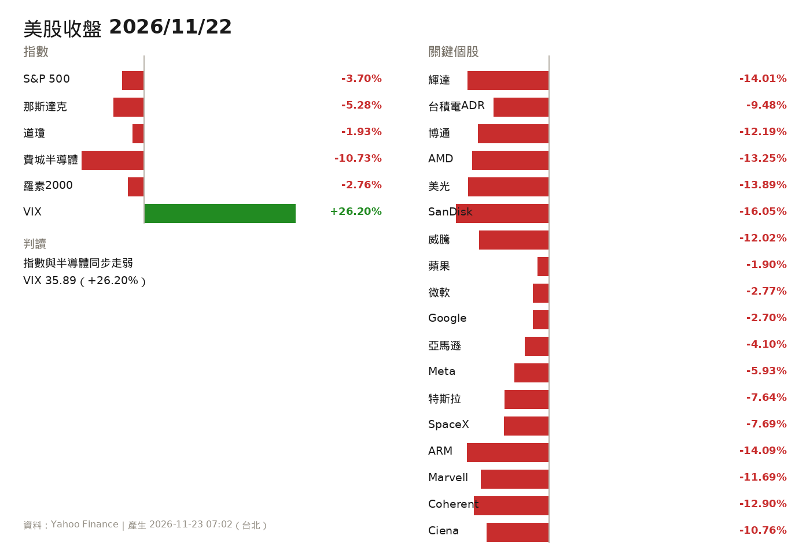
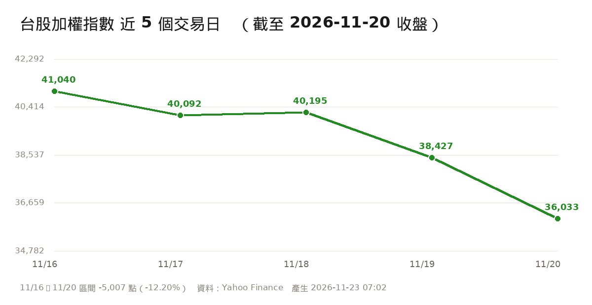
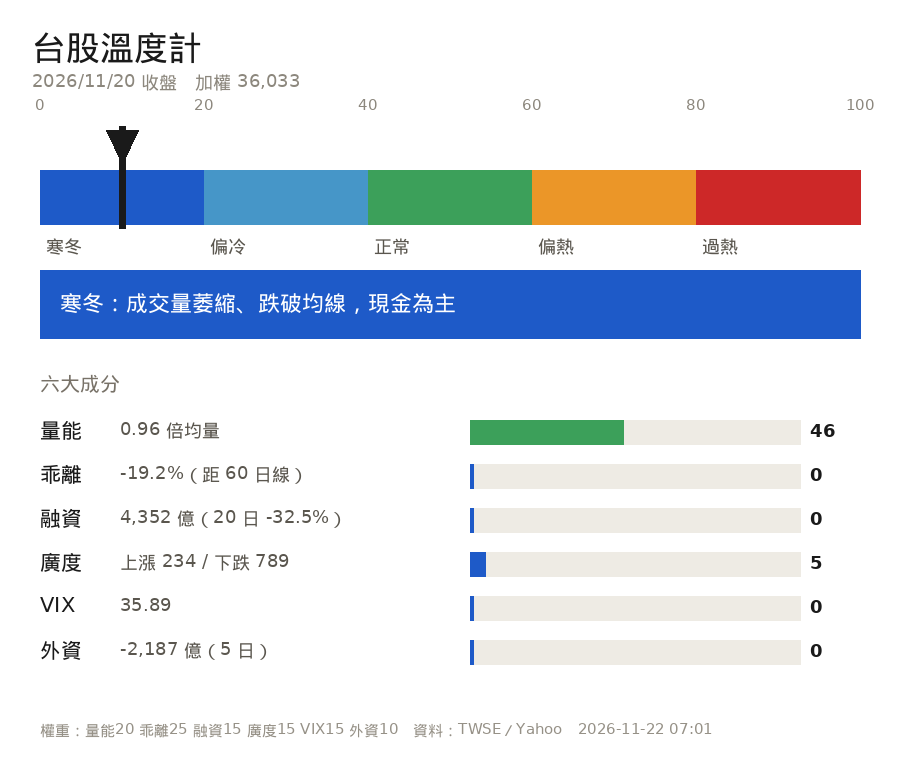
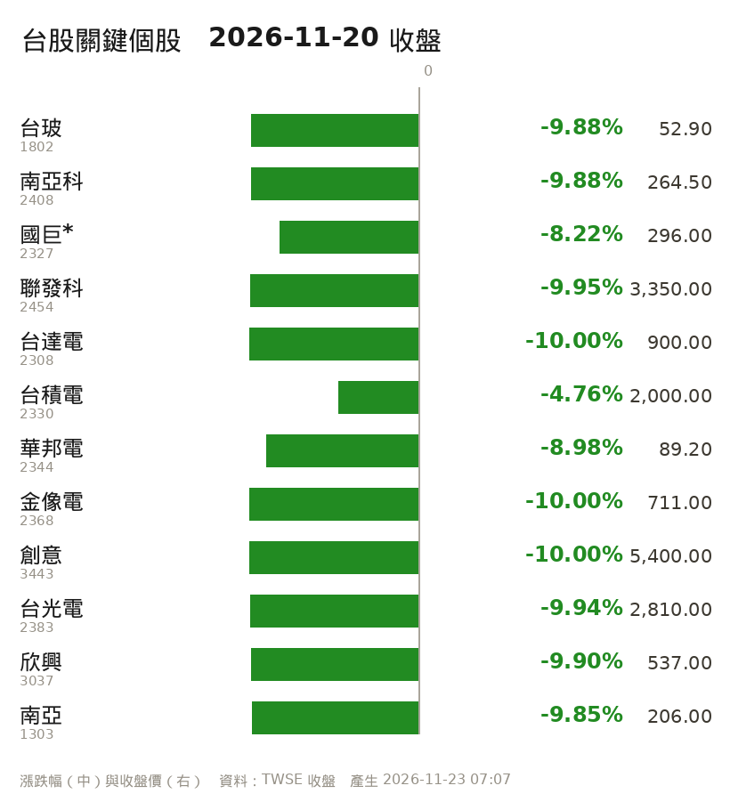
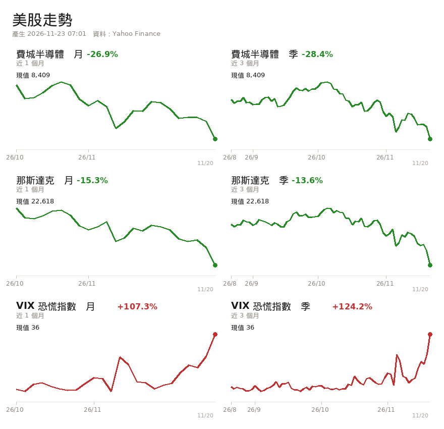
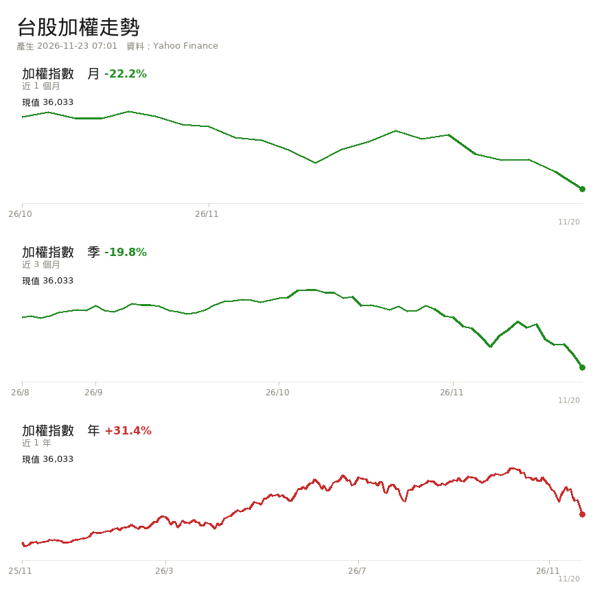

2026-11-23 投資日報2026-11-24 06:57
今天是交易日（週一）。台股與美股最後交易日都是 11/20（五）；今天開盤要補的是「美股 11/20 的重挫 + 台指期夜盤 -5.25%」，不是新消息。 日股今天休市（勤勞感謝日），領先指標只能看韓股（08:00 開）與美股期貨（07:00 剛開）。
重點提醒｜Emmy（持續中）
來源：
財經頻道/Emmy追劇時間/Emmy重點提醒追蹤.md。未解除就會每天出現；判定解除當天標「過期」，隔天起不再列出。
- E1 輝達 NVDA／黃仁勳 真正風險不是技術洩密，是「走私晶片＋長期遊說晶片禁令」的國安問題。已持續 11 天。➡️ 未變（週末無新證據）：SEC 查會計與加州檢察長傳票仍在進行；川普 11/20 再喊「希望給黃仁勳第二次機會」，屬總統喊話、不是董事會決定；輝達董事會 11/18 已成立國安委員會、代理 CEO 柯蕾絲重申不讓黃仁勳復職。12/1 眾院三個國安委員會閉門簡報是下一個時間點。NVDA 11/20 收 125.53（-14.01%）、週線 -22.92%。解除條件：正式（非臨時）新任 CEO 定案並公開承諾對台供應鏈與產品路線不變，且財報與後續國會簡報後無新增出口管制。
- E2 台股／美股大盤 民主黨期中選舉大勝 → AI 資料中心與科技業監管收緊的恐慌，是 11/05-11/06 崩盤主因。已持續 15 天。➡️ 未變（週末無新證據）：眾院外委會公開 87.99 萬顆 AI 晶片輸中許可、要求 BIS 次長 12 月初出席聽證；BIS 132 頁新規 11/17 生效、封堵第三地遠端算力。無新增管制或轉鬆。解除條件：具體監管法案送進國會並過關，或政策明確轉向寬鬆。
- E3 台股／美股大盤 「熊市要來了嗎、該獲利了結嗎」——她事前提示了這一波下殺。已持續 22 天。➡️ 未變（價格待今天驗證）：11/23（一）是補跌日，夜盤 33,919 已先定價約 -5.9%。週末政策再加碼：金管會限空令 3.0 今天上路（5 項）、國安基金承認 11/6 起已進場、傳證交所與十大券商研議融資維持率降至 120%；統一投顧估 33,000–40,000 大區間。政策是減速器，前兩波（11/9、11/20 上路）當天都還是跌。解除條件：指數站回季線且外資轉為連續買超。
- E4 油價／布蘭特原油 中東戰火推升油價 → 通膨壓力 → 股市下跌。已持續 25 天。⬇️ 緩解＋數字修正：11/20 布蘭特收 89.95（-2.21%）、WTI 83.41（+0.24%）——布蘭特已跌破 90（解除條件之一成立）。修正 11/21～22 本檔的 92.57：那是 11/9 收盤，11/19 為 91.98，11/20 才是 89.95（來源：ICE 結算／Yahoo 日 K，兩處一致）。中東（胡塞、荷姆茲）未有降溫證據，故不解除；OPEC+ 11/29 開會。解除條件：布蘭特回落至 90 美元以下且中東衝突降溫。
- E5 記憶體族群／8299 群聯 大摩一次降 6 檔記憶體、目標價腰斬，群聯 2,588→1,357 降為「劣於大盤」；理由是 2028 供需恢復平衡＋美國資料中心約兩成產能延後到 2029。已持續 12 天。➡️ 未變（週末無交易）：8299 群聯 11/20 收 1,320，仍低於大摩目標 1,357。本週觀察點：南亞科（2408）法說與記憶體現貨報價，是 E5 解除與否的前導指標。解除條件：NAND 現貨報價重新轉強且外資對群聯轉為買超，或大摩回補評等。
- E7 AI 硬體成本／毛利率見頂 輝達 Q4 毛利率指引 71~72%，低於本季 74.8%；採購承諾大幅增加，成本正往上游擠。已持續 5 天。➡️ 未變：輝達 Q4 毛利率指引 71~72%（本季 74.8%）不變；採購承諾口徑仍未以 10-Q 原文核對。解除條件：輝達毛利率回升至 74% 以上且採購承諾增速放緩，或記憶體現貨報價連續 2 個月回落。
- E8 跨資產同步下跌／流動性緊縮 股、油、金同一天一起跌，代表「保證金追繳、到處變現」，不是資金輪動。已持續 2 天。➡️ 未變（出現一個反向訊號）：11/20 股、金同跌（黃金 3,515.4、-4.62%）、VIX 35.89 未回落，仍符合「到處變現」。但比特幣自近兩年低點反彈至 61,116（+1.7%，11/23 06:xx），是唯一走多的風險資產，尚未改變結論。解除條件：VIX 回落至 25 以下、黃金與股市不再同步下跌、美 10 年殖利率止穩。
- E9 AI 晶片出口許可調查擴散（輝達＋超微） 眾院公開 88 萬顆輸中許可後，調查戰線從「走私」擴大到「許可審查」與「會計揭露」；超微遭 Hunterbrook Media 做空報告狙擊（指其中國供應鏈與韌體支援），超微否認不當行為。已持續 1 天。➡️ 未變：超微 11/20 收 424.39（-13.25%）；本週等國會聽證與 BIS 是否再出新規。指控本身仍未經法院或監管認定。解除條件：國會聽證結束且無新一輪管制、超微與輝達不再創低，或做空報告被監管駁回。
📅 本週紅綠清單（W47 週報摘要）
- 🔴 看多 18 項 集中在基本面（前三季稅前淨利 +86.43%、10 月外銷訂單連 21 紅）與「融資已砍 31.7%」的籌碼論；點名次數最多的是台積電、南亞、國巨。
- 🟢 危機 41 項 集中在融資／維持率（7 次）、台股大盤（4 次）、利率（4 次）、外資籌碼（4 次）。E1～E9 仍有 8 項未解除。
- 一句話：看多的是「基本面＋政策」，看空的是「槓桿＋資金流」。這一週兩邊都對，但先決定價格的是資金流。
⚠️ 警報狀態（排程現況，必須讓你知道）
危機警報 盤中每5分（b8b06d41543b）：啟用中、last_status ok。今天 09:00–13:55 每 5 分鐘檢查，觸發就推播給你。危機警報 影片檢查22:20（fe75a6f134cf）：啟用中、last_status ok。- 🔴
粉專貼文抓取 06:20（ec20b80ab8bd）：上次狀態 error。今天沒有fb_2026-11-23.json，所以「消息面」頁籤今天只有說明、沒有粉專內容——不是我漏寫，是抓取失敗（連續第 3 天）。 - 🔴
2330 跌破2340 提醒（a989c6c4710b）：停用＋上次 error。2330 已跌到 2,000，門檻 2,340 早被穿透。我不自己改（你說過排程要先問你），但要讓你知道它現在不會叫。 - 🟡
2454 跌破3830 提醒（a3a39d071473）：仍啟用。2454 已跌到 3,350，等於每個交易日都在觸發，通知會變噪音。要不要改價位，等你一句話。
⓿ 先回答三個問題：消息面 vs 已發生
題一：限空令 3.0＋國安基金進場，今天會不會因此不跌？
| 項目 | 狀態 | 說明 |
|---|---|---|
| 第三波限空令 5 項 | 🟥 已發生 | 金管會 11/21 宣布、今天上路：①全面禁止平盤下放空 ②融券保證金 130%→150% ③暫停受理認售權證 ④鼓勵庫藏股 ⑤鼓勵出借人召回股票 |
| 國安基金「已進場」 | 🟥 已發生 | 11/21 財政部證實，自 11/6 授權後已執行安定任務；未公布金額，可運用上限 5,000 億 |
| 融資維持率降到 120% | 🟨 消息面 | 證交所 11/22 與十大券商開會討論，尚無公告。且「120%」是媒體口徑，與官方整戶維持率 138.4% 不同一件事 |
| 前兩波政策的實際效果 | 🟥 已發生（反例） | 限空令 1.0（11/9）、2.0（11/20 上路）當天都還是跌；11/20 上路首日跌 2,393 點 |
| 今天開盤位置 | ⏳ 還沒發生 | 夜盤 33,919 已先定價 -5.9%；實際價格 09:00 才知道 |
怎麼用：政策是減速器，不是方向盤。把它當「跌得慢一點」，不要當「可以接刀」。
題二：11/25 的 T+3 斷頭潮是事實還是恐嚇？
| 項目 | 狀態 | 說明 |
|---|---|---|
| 11/20 融資單日大減 | 🟥 已發生 | 上市 -491.41 億、上櫃 -145.60 億，合計 -637.01 億；上市餘額降至 4,352.27 億，自 10/6 高點減 31.7% |
| 整戶維持率 | 🟥 已發生 | 11/20 約 138.4%（股溜平台統計），距 130% 追繳門檻 8.4 個百分點 |
| 11/25 是最大斷頭日 | 🟨 推算 | 券商 T 日通知、T+2 內補繳 → 11/20 跌停賣不掉的部位，補繳期限落在 11/25。這是推算，不是公告 |
| 賣壓是否已消化 | ⏳ 還沒發生 | 要「融資連 2 日不再大減 + 指數不再破底」才算，現在只有 1 天資料 |
怎麼用：把 11/25 當「已知的壓力日」而不是「世界末日」。真正該記的是三個數字：融資餘額、整戶維持率、外資期貨空單。
題三：輝達被 SEC 查帳，是不是要完了？
| 項目 | 狀態 | 說明 |
|---|---|---|
| SEC 查會計 | 🟥 已發生（媒體引述知情人士） | 路透 11/20：SEC 執法部門檢視輝達會計處理（含地區營收認列口徑） |
| 加州檢察長傳票 | 🟥 已發生 | 11/19 對輝達發傳票，查是否違反加州證券法、是否誤導投資人 |
| 查出違法 | ⏳ 還沒發生 | 路透明說：啟動調查不代表違法，多數案件最後沒有執法行動 |
| 股價已反應 | 🟥 已發生 | NVDA 11/20 收 125.53（-14.01%），較 10 月高點 239.24 約 -48%，週線連 7 黑 |
怎麼用：看「已發生」那一欄決定部位，不要看「還沒發生」那一欄做決定。
🌙 盤前跨市場預警（06:40 產出，摘要）
| 面向 | 結論 | 依據 |
|---|---|---|
| ① 美股昨夜 | 四大指數全黑，費半 -10.73%、那指 -5.28%、標普 -3.70%、道瓊 -1.93%，VIX 35.89（+26%） | 11/20 收盤 |
| ② 原因 | ①AI 資本支出回收率被重新定價 ②輝達 SEC 查帳＋加州傳票 ③Anthropic 掛牌次日 -8.5% ④Fed 12 月再升息押注升溫 ⑤川普喊「別去海外蓋資料中心」 ⑥期中選舉後監管收緊 ⑦三大指數跌破 200 日線 ⑧跨資產去槓桿（黃金同日 -4.62%） | 盤前檔 ② 段，8 條皆有媒體原文 |
| ③ 影響期間 | 短期 1–2 週偏空，主壓力在今天與 11/25；中期 1–3 個月看 12/9 Fed；長期基本面未壞、但估值要重設 | 融資已去槓桿 31.7%，賣壓有時間上限 |
| ④ AI 建議 | 今天不買、不加碼、不攤平；處理已破停損的部位；2330 站不回 2,000 之前不加碼 | 紀律三、紀律六 |
| ⑤ YouTube 建議 | 一綺：「25 號以後再動作，這幾天觀望」；宏爺：技術面認輸、基本面不認輸 | 影片觀點，非事實 |
| ⑥ 新聞建議 | 樂觀派（台新、第一金、統一）：跌深隨時反彈、別砍在阿呆谷；悲觀派：回到代工行情 | 經濟日報 11/21 |
| ⑦ 綜合建議 | ①今天 09:00–13:30 不買 ②處理 2454（-14%）並檢視 3718／4160 ③11/25 前不做新決定 | 衝突點在時間尺度：法人講 1–3 個月，紀律管今天 |
① 一句話結論
今天是「補跌日」，不是「新利空日」：台指期夜盤 33,919 已經把 -5.9% 定價掉，限空令 3.0 上路但前兩波上路當天都還是跌。紀律條件（跌破季線＋外資連 3 日大賣）已成立多日，該做的是把持股水位降到 3 成以下，不是研究要不要撿便宜；今天唯一該動作的是「已經跌破 -7% 停損」的部位。
今日要守的紀律
台股溫度 16／100（寒冬）：量能 0.96 倍均量（46 分）、乖離 -19.2% 距 60 日線（0 分）、融資 20 日 -32.5%（0 分）、廣度上漲 492／下跌 520（48 分）、VIX 35.89（0 分）、外資 5 日 -2,187 億（0 分）。寒冬 → 加一條「不要摸底」。
- 09:00–13:30 不買、不加碼、不攤平——今天是觀察日，不是進場日。
- 只看 4 個數字：35,738（11/20 盤中低）破不破、跌停家數有沒再破 300 家、台積電 2,000 站不站回、融資餘額是否連 2 日大減。
- 2454（-14.00%）已破 -7% 停損線：任何反彈都是減碼窗口，不是攤平理由。
- 11/25（T+3 斷頭推算日）之前不做新決定。
🎒 JNA-202 PRO 快取單肩包：目前最低 2,800（BigGo／飛比通路全新），目標 1,500，還差 1,300，未達標。
② 國際與美股
美股最後交易日 11/20（五），週末無交易。以下為 11/20 收盤，資料來自 Yahoo Finance chart API。

| 指數 | 收盤 | 單日 | 週線 |
|---|---|---|---|
| S&P 500 | 6,910.39 | -3.70% | -8.61% |
| 那斯達克 | 22,617.73 | -5.28% | -10.02% |
| 道瓊 | 48,147.33 | -1.93% | -8.02% |
| 費城半導體 SOX | 8,408.59 | -10.73% | -17.13% |
| VIX | 35.89 | +26.2% | +85.96% |
上漲主因／下跌主因：跌的主因不是單一新聞，是「AI 資本支出能不能回收」被重新定價，加上輝達個別治理風險（SEC 查會計、加州傳票、CEO 代理）。三大指數都跌破 200 日線，那斯達克 100 較高點 -20% 進入熊市。
關鍵個股（11/20 收盤，22 檔）
| 個股 | 收盤 | 單日 | 一句判讀 |
|---|---|---|---|
| 輝達 NVDA | 125.53 | -14.01% | SEC 查會計＋CEO 代理，週線連 7 黑（2008 年以來最長） |
| 台積電 ADR TSM | 318.71 | -9.48% | ADR 溢價收斂中，對 2330 現貨是壓力 |
| AMD | 424.39 | -13.25% | 做空報告＋輸中許可調查，連 2 日重挫 |
| 博通 AVGO | 304.41 | -12.19% | ASIC 龍頭也無法倖免 |
| 高通 QCOM | 149.94 | -7.45% | 手機鏈需求疑慮，跌幅相對小 |
| 應用材料 AMAT | 302.63 | -10.71% | 設備股跟著資本支出預期下修 |
| 美光 MU | 594.51 | -13.89% | 記憶體是本波提款重心 |
| SanDisk SNDK | 79.24 | -16.05% | 全場最慘，NAND 純度最高 |
| 聯電 ADR UMC | 12.04 | -10.15% | 成熟製程同步被砍 |
| 日月光 ADR ASX | 26.27 | -13.84% | 封測跟著 AI 鏈走 |
| CoreWeave CRWV | 39.51 | -12.02% | 舉債蓋機房的商業模式，利率不鬆就先被砍 |
| 蘋果 AAPL | 342.56 | -1.90% | 全場最抗跌，資金往「非 AI」避 |
| 微軟 MSFT | 484.52 | -2.77% | 雲端成長股但跌幅溫和 |
| Google GOOGL | 265.29 | -2.70% | 相對抗跌 |
| 亞馬遜 AMZN | 246.82 | -4.10% | 資本支出大戶，中等跌幅 |
| Meta META | 560.84 | -5.93% | 廣告＋AI 雙重評價 |
| 特斯拉 TSLA | 345.82 | -7.64% | 高 Beta，跟跌 |
| SpaceX SPCX | 127.79 | -7.69% | 超過 ±5% 門檻：沒有公司個別事件（無發射失敗、無財報），屬新股高 Beta 跟跌；下一個觀察點是 IPO 解禁與 13F 持股揭露 |
| ARM | 152.20 | -14.09% | 與 NVDA 同日重挫 → 這次不是「GPU 換 ASIC」的資金移動 |
| Marvell MRVL | 122.28 | -11.69% | 同上，ASIC 線沒有比較安全 |
| Coherent COHR | 187.22 | -12.90% | 光通訊第二層受益者，被砍更兇 |
| Ciena CIEN | 234.37 | -10.76% | 網通設備同步 |
| Lumentum LITE | 460.54 | -13.94% | 光模組高 Beta |
| Vertiv VRT | 166.24 | -10.14% | 機房散熱電源，看 AI 機房還蓋不蓋 |
上漲的部分（別只看跌）
11/20 這 22 檔全部收黑，一檔都沒有收紅——這是本波第一次「無一檔逆勢上漲」。 我不會編一個給你。真正抗跌的是「跌得少」而不是「有漲」：蘋果 -1.90%、Google -2.70%、微軟 -2.77%、亞馬遜 -4.10%，四檔都是非半導體；跌最兇的全是半導體與 AI 硬體（SanDisk -16.05%、ARM -14.09%、輝達 -14.01%、Lumentum -13.94%）。
盤後到今晨唯一轉強的是比特幣 61,116（+1.7%，自近兩年低點反彈），這是風險胃納還在的證據，但一項不夠。亞股 11/20 也是黑：日經 56,436.65（-5.06%）、韓股 KOSPI 4,869.96（-5.21%）；日股今天休市，韓股 08:00 開盤是台股開盤前唯一可看的即時指標。美股指數期貨 07:00 剛開，此刻顯示與週五收盤相同（ES 6,935.0、NQ 25,126.5），這是「還沒成交」不是「止跌」。
跨市場
| 項目 | 數值 | 單日 | 白話 |
|---|---|---|---|
| 美 10 年期殖利率 | 4.912% | -2.77% | 殖利率跌＝債券價格漲＝資金躲進債市 |
| 美 5 年期殖利率 | 4.701% | -3.39% | 短天期跌更多＝市場在定價「景氣轉弱」 |
| 美元指數 | 103.84 | +0.03% | 美元持平偏強，資金沒離開美元 |
| 布蘭特原油 | 89.95 | -2.21% | 跌破 90，通膨壓力略減（E4 緩解） |
| WTI 原油 | 83.41 | +0.24% | 小漲，油價走勢分歧 |
| 黃金 | 3,515.4 | -4.62% | 連黃金都被賣＝保證金追繳，不是避險輪動 |
| 美元／台幣 | 32.956 | 台幣貶 0.24% | 台幣偏弱，外資匯出壓力還在 |
| VIX | 35.89 | +26.2% | 恐慌指數高於 30，歷史上這種水位「波動大、方向不明」 |
③ 台股覆盤（11/20 最後交易日）

| 項目 | 數值 | 說明 |
|---|---|---|
| 加權指數 | 36,033.29 | -2,393.60（-6.23%），史上第三大跌點 |
| 成交金額 | 9,353.10 億 | 證交所 FMTQIK 官方值（另有媒體寫 8,773 億，口徑不同） |
| 盤中 | 開 37,646.13、最低 35,738.68 | 開低後一路下殺，收在相對低檔 |
| 跌停家數 | 365 家 | 上市櫃合計；1,509 檔下跌 |
| 外資 | -95.11 億 | 賣壓主體不是外資 |
| 投信 | -73.47 億 | 連賣 |
| 自營商 | -340.83 億 | 避險部位不計代價砍，這才是 11/20 最大賣方 |
| 三大法人合計 | -509.41 億 | 連 5 賣，5 日累計約 -3,316 億 |
| 融資餘額 | 4,352.27 億（上市） | 單日 -491.41 億；上櫃 -145.60 億，合計 -637.01 億 |
| 整戶維持率 | 約 138.4% | 距 130% 追繳 8.4 個百分點 |
| 週線 | -7,641.83 點（-17.50%） | 史上最大單週跌點 |
盤勢節奏（今天怎麼看）：夜盤 33,919 等於比現貨收盤再低 2,114 點，跳空開低幾乎確定。開盤後要分辨兩件事：
- 無量跌停打開＝賣壓暫停，不是底部；
- 有量下殺後拉長下影線＝有人接手，但需要連 2 日才算換手成功。
今天的關鍵價位不是「幾點」，是35,738 有沒有破（11/20 盤中低）。破了就是新低段，沒破才有所謂「第二隻腳」。
③-1 💰 三大法人與籌碼（示範：11/23 收盤後數據）
| 法人 | 買賣超（億元） |
|---|---|
| 外資 | -289.5 |
| 投信 | -41.5 |
| 自營 | -190.0 |
| 合計 | -521.0 |
外資買超 TOP 10
| 代號 | 名稱 | 張數 |
|---|---|---|
| 6770 | 力積電 | +12,948 |
| 2603 | 長榮 | +9,965 |
| 5871 | 中租-KY | +7,227 |
| 2882 | 國泰金 | +6,647 |
| 2481 | 強茂 | +6,283 |
| 2356 | 英業達 | +5,857 |
| 2880 | 華南金 | +5,301 |
| 2618 | 長榮航 | +4,051 |
| 3706 | 神達 | +3,512 |
| 2492 | 華新科 | +3,403 |
外資賣超 TOP 10
| 代號 | 名稱 | 張數 |
|---|---|---|
| 1802 | 台玻 | -31,450 |
| 2883 | 凱基金 | -22,667 |
| 3481 | 群創 | -20,036 |
| 2317 | 鴻海 | -14,885 |
| 2884 | 玉山金 | -13,683 |
| 2887 | 台新新光金 | -13,176 |
| 2002 | 中鋼 | -12,709 |
| 2409 | 友達 | -12,621 |
| 2330 | 台積電 | -11,039 |
| 2027 | 大成鋼 | -8,036 |
投信買超 TOP 10
| 代號 | 名稱 | 張數 |
|---|---|---|
| 2883 | 凱基金 | +19,840 |
| 2890 | 永豐金 | +18,466 |
| 2886 | 兆豐金 | +17,468 |
| 2027 | 大成鋼 | +13,576 |
| 2892 | 第一金 | +13,121 |
| 2412 | 中華電 | +9,708 |
| 6505 | 台塑化 | +4,592 |
| 2887 | 台新新光金 | +3,783 |
| 1216 | 統一 | +3,393 |
| 2606 | 裕民 | +2,388 |
投信賣超 TOP 10
| 代號 | 名稱 | 張數 |
|---|---|---|
| 2882 | 國泰金 | -12,500 |
| 2603 | 長榮 | -11,368 |
| 9904 | 寶成 | -9,918 |
| 2891 | 中信金 | -8,311 |
| 2356 | 英業達 | -7,648 |
| 2327 | 國巨* | -6,239 |
| 2880 | 華南金 | -5,844 |
| 5871 | 中租-KY | -4,633 |
| 2881 | 富邦金 | -4,297 |
| 3532 | 台勝科 | -3,995 |
自營買超 TOP 5
| 代號 | 名稱 | 張數 |
|---|---|---|
| 2887 | 台新新光金 | +6,079 |
| 2891 | 中信金 | +4,099 |
| 2883 | 凱基金 | +3,261 |
| 2884 | 玉山金 | +3,034 |
| 2330 | 台積電 | +2,665 |
自營賣超 TOP 5
| 代號 | 名稱 | 張數 |
|---|---|---|
| 2337 | 旺宏 | -6,222 |
| 6770 | 力積電 | -2,681 |
| 6120 | 達運 | -867 |
| 2308 | 台達電 | -736 |
| 6885 | 全福生技 | -633 |
散戶槓桿（融資融券）
- 融資餘額 4,338 億（-14 億）
- 融券 172,957 張（-26,834 張）
政府股市政策（持續中）
- 2026-11-09 金管會 借券賣出上限 30% → 3%、融券保證金 90% → 130% 每日盤中借券賣出量由「前 30 日均量 30%」降至 3%；融券保證金成數由 90% 提高至 130%；並放寬補繳擔保品（零股、基金、海外股票可抵繳）。
- 2026-11-20 金管會 收盤跌逾 3.5% 個股，隔日禁止平盤下放空；借券上限 3% → 1% 針對當日跌幅超過 3.5% 的股票，次一交易日禁止平盤以下放空；借券賣出上限再降至 1%。
- 2026-11-24 金管會 融資維持率 130% → 120%，11/24 前追繳紀錄全部取消 11/24 起整戶擔保維持率門檻降至 120%；11/24 前因低於 130% 被追繳者，追繳通知取消、擔保品不處分。上次降至 120% 為 1998 年。
- 2026-11-21 國安基金 國安基金進場（新聞報導，未見正式公告逐字） 授權執行秘書視情況動用資金護盤。此項為媒體報導，官方公開資訊尚待確認，日報標示為「消息面」。
資料來源：TWSE（三大法人 BFI82U／個股 T86／融資融券 MI_MARGN） 抓取 2026-11-24 03:35
④ 頻道影片重點
全部標「影片觀點」，不是事實；時間碼對應各集逐字稿。
🔴 看多／加碼訊號
| 標的 | 理由 | 時間碼 | 來源 |
|---|---|---|---|
| 台積電（2330） | 長期買盤不會消失，「只是不知道何時才是終點」 | ⏱[20:21] | 一綺 11/22 |
| 國巨（2327） | 外資近十個交易日偏買，300 元以下有人接（她同段說自己也不敢買） | ⏱[37:40] | 一綺 11/22 |
| 南亞（1303） | 玻纖布五檔裡最穩，有實質營收獲利、今年賺一個股本 | ⏱[42:42] | 一綺 11/22 |
| 台玻（1802） | 11/20 融資逆勢增加、跌停被 400 張連續單敲開，「下禮拜一可觀察」 | ⏱[41:24] | 一綺 11/22 |
| 基本面撐底 | 上市櫃前三季稅前淨利 +86.43%（金管會公告） | ⏱[21:38] | 宏爺 11/20 |
| 空單回補空間 | 外資期貨空單 9.8 萬口，「平倉就是反彈火種」 | ⏱[10:52] | 宏爺 11/20 |
🟢 危機／減碼訊號
| 標的／主題 | 理由 | 時間碼 | 來源 |
|---|---|---|---|
| 大盤 | 「如果有錢，建議 25 號以後再動作，這幾天就觀望」 | ⏱[13:44] | 一綺 11/22 |
| 融資戶 | T+3 斷頭最危險是週三（11/25），不是上週五 | ⏱[14:18] | 一綺 11/22 |
| 大盤 | 最悲觀情境回 3/31 的 31,000（她說那是「最壞情況」不是預測） | ⏱[12:58] | 一綺 11/22 |
| 0050／主動式 ETF | 外資砍 ETF 造成被動賣壓，籌碼不穩 | ⏱[33:50] | 一綺 11/22 |
| 四大指數 | 全破年線且長黑收最低 | ⏱[04:10] | 宏爺 11/20 |
| 費半 | 月線與年線死亡交叉 | ⏱[05:17] | 宏爺 11/20 |
| 禁空令 | 限空反而逼空頭賣現股降部位，變成另一股賣壓 | ⏱[11:48] | 宏爺 11/20 |
📊 情緒溫度計（逐字稿實算，同一份字典：危機詞 20 個、看多詞 17 個）
| 集數 | 字數 | 偏空詞 | 偏多詞 | 比值 | 語氣判讀 |
|---|---|---|---|---|---|
| 一綺 11/20 | 21,595 | 24（殺 9、跌停 9、停損 2） | 21（機會 4、便宜 4、底部 3） | 1.14 | 跌幅最大的一天，詞頻卻最「中性」——因為她在安慰觀眾 |
| 一綺 11/22（最新） | 13,833 | 32（殺 9、泡沫 9、跌停 8） | 22（反彈 8、機會 5） | 1.45 | 偏空詞升高、且「泡沫」首次成為她的高頻詞；反彈一詞變多，是在講「什麼時候彈」不是「看多」 |
| 宏爺 11/20 | 8,178 | 23（空頭 5、恐慌 4、跌停 3） | 20（多頭 5、反彈 4、樂觀 4） | 1.15 | 一半一半：空在技術面、多在基本面 |
一句話：最新一集的偏空詞是偏多詞的 1.45 倍，而且是「泡沫」這種結構性的詞變多，不是「今天很殺」的情緒詞。這種語氣通常對應「還有得磨，不是 V 轉」。
🔵 中長期展望（產業趨勢，不是當日漲跌）
- AI 從「拼命擴產」轉「算回收率」：市場現在問的是「蓋這麼多資料中心，錢怎麼賺回來」。這個問題不會一週解決，會用 2–3 季財報回答。
- 賣的是 AI 總資本支出，不是「誰搶誰的單」：11/20 NVDA -14.01%、ARM -14.09%、MRVL -11.69% 同步崩。過去「GPU 漲、ASIC 跌」的輪動邏輯這波失效。
- 記憶體是最前線的溫度計：TrendForce 對 2026Q4 是「漲幅收斂」、壓力在 2027H1；8299 這種 NAND 純度高的會比晶圓代工更早反應。
- 利率是上游變數：12/9 Fed 會議決定「會不會再往上」。利率不鬆，靠舉債擴張的 AI 機房（CRWV 這類）就先被砍。
- 台廠的長期風險是「議價關係」：輝達換上財務背景的代理 CEO、與台灣沒有淵源，法人擔心「回到代工行情」。這需要幾季財報才看得出——但這是這波最可能改變長期結構的變數，不是短期雜訊。
- 基本面是煞車不是引擎：GDP 11.05%、1–10 月外銷訂單 +58.6%、上市櫃前三季稅前淨利 +86.43% 都是已發生的事實，撐住的是「不會歸零」，不是「明天就漲」。
📇 頻道摘要（六台最新一期）
Emmy追劇時間 2026/11/17（EP.179）
名稱：黃仁勳下台 輝達震撼彈
內容
- 黃仁勳被逼宮下台。輝達的治理重度依賴黃仁勳個人決策，這是她認為最嚴重的地方。
- 但這波大跌不單純因為他的人事，真正原因是 BIS（美國商務部出口安全局）11/17 公布 132 頁新禁令：新加坡、馬來西亞、泰國、印尼、巴西也被列入管制。
- 過去中國 AI 公司走兩條路：走私伺服器（量少，買不到 10%）、或在親中國家蓋資料中心遠端算（量大）。新禁令把第二條路堵死。
- 對台股／台積電的傳導：先進晶片出貨地點被限縮 → 客戶拉貨節奏改變。
評論
- 她把「人事」和「政策」分開講，這點是對的：黃仁勳回不回來是消息面，BIS 132 頁是已發生。
- 真正該盯的是「資料中心蓋在哪」這條線，比「誰當 CEO」影響更長。
- 她自己的說法偏保守：沒說崩完了，只說這是結構性變化。
最近貼文（11/22，已編輯，11/23 無新貼文）
- 「台股跌破四萬點一路向下…說好的逃生通道在哪裡？ AI 泡沫真的來了嗎？」
- 另提 AMD 也爆 AI 晶片走私疑雲（眾院公開 BIS 許可：輝達＋超微 87.99 萬顆輸中；做空機構 Hunterbrook 指控，超微否認）
- 貼文態度：她把這波定義為「已發生」，問的是出場窗口，不是抄底點
一綺聊股 2026/11/22
名稱：夜盤又崩 1,881 點..持股腰斬怎麼辦？金管會第三波「禁空令」救的了嗎？
內容
- 🔴 國巨 2327：外資連十日偏買，300 元以下有人承接（但她自己說「我也不敢在這邊買」）
- 🔴 南亞 1303：玻纖布五檔裡最穩，有實質營收獲利、今年已賺一個股本
- 🔴 台積電 2330：長期買盤不會消失，問題只是「何時才是終點」
- 🟢 11/25 前先觀望，不要搶反彈
- 🟢 融資戶 T+3 斷頭，最危險在週三（週五被斷的，T+3 落到週三）
- 🟢 最悲觀回測 3/31 的 31,000 點
- 這一集是「唱歌取暖場」，股市段落集中在 02:50–45:00（全長 99 分，只轉錄前 45 分）
評論
- 她的「T+3 斷頭在週三」和 DayStar 講的「11/24、11/25 兩批處分」是同一個機制，兩台獨立講到同一件事，可信度高。
- 但「31,000 點」是最悲觀情境，不是預測；對照 11/23 低點 35,442，等於還要再跌 12%。
- 她點的三檔裡，只有南亞是「有獲利」的邏輯，國巨和台積電都是「有人在接」的觀察，不要當買進訊號。
最近貼文：無（該台以直播為主）
宏爺講股 2026/11/23
名稱：股市反彈騙散戶？別忽視這關鍵！美股逼近熊市、台股急拉千點！國安基金與禁空令聯手，外資態度藏驚人轉折？
內容
- 🔴 融資兩個月減 2,024 億（6,000 多億 → 4,352 億），「海綿的水排掉了」
- 🔴 美光長約 RPO 1,500 億美元，客戶先付現金——他認為這是基本面沒壞的硬證據
- 🔴 外銷訂單 +78.3%，基本面沒壞
- 🔴 國安基金＋限空令政策托底
- 🟢 費半跌破所有均線、月 KD 死叉
- 🟢 美光預估 PE 只有 3.76 倍 → 景氣高點警訊（便宜是因為大家預期衰退）
- 🟢 輝達 12/1 國會聽證，政策風險還沒定
- 🟢 10/6 以來 -28.4%，1,805 檔破年線
評論
- 他的框架是「政策托底＋籌碼沉澱 vs 技術面全破」，所以他也不敢說底部到了。
- 「美光 PE 3.76 倍」這段最值得記：記憶體便宜通常出現在景氣高點，不是低點。
- 12/1 輝達聽證是他給的明確時間點，比「等消息」有用。
最近貼文：無（以影片為主）
晨星 DayStar Brilliant 2026/11/23（兩集）
名稱①：台積電開盤破 2000 又站回來！外資卻狂賣 224 億，這個反彈能信嗎？ 名稱②：融資維持率降到 120%，斷頭危機解除了嗎？官方 151% vs 民間 119%，到底該看哪個？
內容（①）
- 加權收 36,811（+778，+2.16%），盤中最低 35,442、最高 37,081，單日高低差 1,665 點
- 台積電開 1,990 → 低 1,970 → 收 2,030（+1.5%），量縮 26%
- 外資 -289 億（週五的 3 倍），三大法人合計 -512 億
- 早盤先殺的原因是「補週五美股那一刀」（那斯達克 -5.3%、輝達 -14%、台積電 ADR -9.36%）
- 漲最兇的是玻璃陶瓷 +9%、塑膠 +7%（台玻、南亞漲停）——其實是 AI PCB 上游材料（玻纖布、銅箔基板）
- 金融股逆勢跌（中信金 -6.18%）：資金從防守股抽出來搶電子股
內容（②）
- 追繳戶數 11/18 719 戶 → 11/20 6,462 戶（3 天 9 倍）
- 11/24 起維持率 130%→120%，11/24 前追繳全部取消（上次 1998 年）
- 融資買 6 成、跌 22% 就是 130%，這時本金已經虧 55%
- 官方 151% vs 民間扣 ETF 119.5%——兩個都對，回答的問題不同
- 若指數再跌 8-10%（33,000 多），會把卡在 120% 的人再推一次
評論
- 這兩集合起來是她這波講最完整的一套：先講「反彈不能信」，再講「斷頭沒解除」。
- 最有價值的是「玻璃陶瓷其實是 AI PCB 材料」這個拆解，看族群名稱會誤判。
- 她給的驗證條件很清楚：35,442 守住＝有機會成底，跌破＝反彈失敗。
最近貼文：無
財女珍妮 2026/11/23
名稱：聯準會戳破 AI 泡沫？財長貝森特轉彎，美股崩盤有救了？
內容：（逐字稿轉錄中，完成後補）
評論：（待補）
最近貼文：無
鈔錢部署–華視優選 2026/11/22
名稱：【精華】國安基金發威前先買誰？台積電、台光電、南亞科 杜金龍這樣選（盧燕俐 ft. 杜金龍）
內容：（逐字稿轉錄中，完成後補）
評論：（待補）
最近貼文：無
📺 一綺聊股最近一期（2026年11月22日）
2026年11月22日 一綺聊股 LIVE｜夜盤又崩 1,881 點..持股腰斬怎麼辦？金管會第三波「禁空令」救的了嗎？
🔗 筆記：財經頻道/一綺聊股/2026-11-22_夜盤又崩1881點持股腰斬/筆記.md
🟢 可以留意／建倉的標的
- 國巨（2327） 外資近十個交易日偏買，300 元以下有人接
- 南亞（1303） 玻纖布五檔裡最穩，有實質營收獲利、今年已賺一個股本
- 台積電（2330） 長期買盤不會消失，問題只是「何時才是終點」
- 台玻（1802） 11/20 融資逆勢增加、跌停被 400 張連續單敲開
🔵 中長期展望（產業趨勢）
- 短（1~2 週）：11/23 跳空開低幾乎確定，11/25 T+3 斷頭是最大壓力點。政策（五措施＋維持率降至 120%）只能減緩，不能反轉。32,000–35,738 是下一個觀察區間。
- 中（1~3 個月）：關鍵是 12 月 Fed 升息態度與明年 1 月美國國會（民主黨）政策。若第四季財報不惡化，AI 族群有機會做「第二隻腳」後反彈；但回到 10/6 的 49,968 需要「非常非常長的時間」（她的原話）。
- 長（半年以上）：台灣出口與 AI 供應鏈基本面沒壞（今年 GDP 成長 11.05%、外銷訂單 +58.6%、上市櫃前 10 月營收 56.89 兆超越去年全年）。這波是估值與槓桿的修正，不是產業的衰退。
🔴 危機／要避開
- 大盤 11/25 之前不要動作，這幾天就是觀望
- 融資戶 T+3 斷頭最危險的時點是「禮拜三」，不是上週五
- 大盤 最悲觀情境回到 3/31 的 31,000 點
- 主動式 ETF 與 0050 外資砍 ETF 造成被動賣壓，籌碼不穩
- 操作方式 用融資的人已出局，現股的人「先活下來」
📌 本集結論
- 這波跌的是槓桿與資金流，不是基本面：她在 42 分鐘裡反覆講「只缺買盤」。
- 11/25（T+3）是本週唯一有明確日期的風險點。
- 政策確實比她原本想的更用力：不只五項限空措施，市場還在傳維持率 130%→120%。
⑤ 我的持股動態（11 檔全部，11/20 收盤）
讀
~/.hermes/state/holdings.json（2026-11-20 對帳單確認）＋即時報價 API。今天開盤前先把每一檔的現價與成本對清楚，因為停損是看成本算的。
| 代碼 | 名稱 | 股數 | 成本 | 現價(11/20) | 損益 | 損益% | 今日 |
|---|---|---|---|---|---|---|---|
| 0050 | 元大台灣50 | 60 | 93.88 | 84.45 | -566 | -10.04% | -6.37% |
| 00713 | 元大台灣高息低波 | 200 | 46.58 | 58.00 | +2,284 | +24.52% | -4.61% |
| 1432 | 大魯閣 | 20 | 15.25 | 12.80 | -49 | -16.07% | -6.23% |
| 2002 | 中鋼 | 50 | 29.28 | 17.10 | -609 | -41.60% | -2.84% |
| 2454 | 聯發科 | 4 | 3,895.25 | 3,350.00 | -2,181 | -14.00% | -9.95% |
| 2634 | 漢翔 | 20 | 67.95 | 45.25 | -454 | -33.41% | -6.51% |
| 2886 | 兆豐金 | 311 | 25.50 | 51.80 | +8,179 | +103.14% | -3.00% |
| 3718 | 中光電投控 | 40 | 103.12 | 36.25 | -2,675 | -64.85% | -7.53% |
| 4160 | 訊聯基因 | 27 | 114.07 | 31.00 | -2,243 | -72.82% | -4.91% |
| 6469 | 大樹 | 11 | -6.18（負成本*） | 50.20 | +620 | 不計 | -5.99% |
| 8033 | 雷虎 | 20 | 202.25 | 110.50 | -1,835 | -45.36% | -6.36% |
* 6469 成本為負（歷年配息／減資已回本），報酬率不具意義，只列損益金額。
合計：總成本 52,770、總現值 53,242、總損益 +472、報酬率 +0.89%。 扣掉兆豐金（唯一一檔賺一倍的）：現值 37,132、成本 44,840、報酬率 -17.19%。
- 相對抗跌的只有兩檔：00713（-4.61%）、中鋼（-2.84%）——都是低波動／傳產，不是 AI 鏈。
- 重傷三檔：4160 -72.82%、3718 -64.85%、8033 -45.36%。這三檔要問的只有一句：「當初買它的催化劑還在嗎？」答不出來就照紀律減碼，不要因為「賠很多」而留。
- 2454 -14.00% 已跌破 -7% 停損線；0050 -10.04% 是市值型 ETF，不是個股，處理邏輯不同（看大盤水位而不是個股停損）。
🎒 比價追蹤：JNA 包款（目標 1,500）
更新 11-23 07:02｜資料 BigGo／飛比。JNA-202 PRO 官方是「單肩包」。
| 品項 | 全新最低 | 福利品 | 二手 | 距目標 |
|---|---|---|---|---|
| JNA-202 PRO 快取單肩包 | 2,800 | 2,940 | — | 還差 1,300 |
未達標：目前最低仍高於 1,500 元，繼續追。
⑥ 觀察清單與法人動向
台股觀察清單（13 檔）
| 代碼 | 名稱 | 現價 | 漲跌 | 成交量 |
|---|---|---|---|---|
| 2330 | 台積電 | 2,000.0 | -4.76% | 75,207 張 |
| 2308 | 台達電 | 900.0 | -10.00% | 18,187 張 |
| 2454 | 聯發科 | 3,350.0 | -9.95% | 17,461 張 |
| 3443 | 創意 | 5,400.0 | -10.00% | 413 張 |
| 2383 | 台光電 | 2,810.0 | -9.94% | 3,134 張 |
| 2408 | 南亞科 | 264.5 | -9.88% | 58,703 張 |
| 3037 | 欣興 | 537.0 | -9.90% | 9,062 張 |
| 1802 | 台玻 | 52.9 | -9.88% | 61,812 張 |
| 1303 | 南亞 | 206.0 | -9.85% | 45,856 張 |
| 2327 | 國巨* | 296.0 | -8.22% | 67,950 張 |
| 2368 | 金像電 | 711.0 | -10.00% | 3,390 張 |
| 2344 | 華邦電 | 89.2 | -8.98% | 82,905 張 |
| 3661 | 世芯-KY | 3,240.0 | -10.00% | 2,932 張 |
外資動向（買賣超，單位：張）
| 代碼 | 名稱 | 今日 | 連續 | 近 5 日累計 | 近 10 日累計 |
|---|---|---|---|---|---|
| 1303 | 南亞 | +3,894 | 買超 1 天 | -43,341 | -60,262 |
| 2344 | 華邦電 | +10,569 | 買超 2 天 | +21,440 | +4,682 |
| 2408 | 南亞科 | +6,075 | 買超 2 天 | +9,067 | +24,081 |
| 2327 | 國巨* | +3,141 | 買超 2 天 | +7,854 | +11,927 |
| 3037 | 欣興 | +144 | 買超 1 天 | -4,038 | -18,659 |
| 2383 | 台光電 | +459 | 買超 2 天 | +1,582 | -930 |
| 1802 | 台玻 | -7,667 | 賣超 6 天 | -99,908 | +147,302 |
| 2330 | 台積電 | -11,863 | 賣超 7 天 | -59,023 | -76,499 |
| 2308 | 台達電 | -4,932 | 賣超 3 天 | -12,676 | -21,265 |
| 2454 | 聯發科 | -1,612 | 賣超 5 天 | -8,270 | -9,410 |
| 2368 | 金像電 | -318 | 賣超 3 天 | -3,358 | -4,855 |
| 3661 | 世芯-KY | -47 | 賣超 1 天 | -566 | +2,195 |
| 3443 | 創意 | -5 | 賣超 1 天 | +82 | -783 |
法人資料截止：2026-11-20（TWSE T86）｜報價時間 13:30:00 判讀：2330 外資連 7 賣是紀律六「外資連 3 日大賣」的直接證據；但 2327、2408、2344 外資已轉買 2 天，是清單裡唯三有轉機訊號的。
⑦ SWOT
| 面向 | 內容 |
|---|---|
| S 優勢 | ①兆豐金 +103.14%、00713 +24.52% 是唯二正報酬，合計帳面 +10,463；②整體報酬仍 +0.89%，不是全面虧損；③持股中有 311 股金融股與 200 股低波 ETF，跌時抗跌 |
| W 劣勢 | ①4160 -72.82%、3718 -64.85%、8033 -45.36% 三檔重傷；②2454 -14.00% 已破 -7% 停損未執行；③持股 11 檔，遠超紀律「3~5 檔」上限，顧不到；④扣掉兆豐金後報酬 -17.19% |
| O 機會 | ①限空令 3.0 上路、國安基金已進場（政策底不是市場底）；②融資已去槓桿 31.7%，賣壓有時間上限；③基本面已發生：GDP 11.05%、外銷訂單 +58.6%、前三季稅前淨利 +86.43%；④外資對 2327／2408／2344 已連 2 買 |
| T 威脅 | ①11/25 T+3 斷頭（推算）；②11/28 台灣九合一選舉，選前不確定性；③12/9 Fed 若再升息，AI 估值再壓一輪；④輝達 SEC 查帳／國會 12/1 簡報；⑤VIX 35.89 未回落；⑥11/30 MSCI 生效前後外資換股 |
⑧ 財經行事曆（本週）
| 日期 | 市場 | 事件 | 為什麼重要 |
|---|---|---|---|
| 11/23（一） | TW | 限空令 3.0 上路（5 項） | 政策首日；前兩波上路當天都還是跌 |
| 11/23（一） | JP | 日股休市（勤勞感謝日） | 少了日股這個領先指標，只能看韓股 08:00 開盤 |
| 11/24（二） | TW | MSCI 11 月調整前一週起 | 外資提前換股，權值股尾盤容易異常大量 |
| 11/25（三） | TW | T+3 斷頭壓力日（推算） | 11/20 跌停賣不掉的部位補繳期限落在這天 |
| 11/26（四） | US | 感恩節休市 | 台股正常交易，由內資主導，量通常縮 |
| 11/27（五） | US | 黑色星期五半日交易（台灣 11/28 02:00 收） | 流動性差，不要在這種日子做重大決定 |
| 11/28（六） | TW | 九合一選舉 | 選前觀望、選後政策方向可能變 |
| 11/30（一） | TW/US | MSCI 11 月調整生效 | 尾盤（13:00–13:30）會出現大量換股單 |
| 本週 | US | Q3 GDP、PCE 物價、Fed 褐皮書；DELL 財報 | PCE 是 12/9 Fed 會議前最後一份通膨數據 |
| 本週 | TW | 南亞科、景碩等科技法說；多家金控法說 | 南亞科法說是 E5（記憶體）解除與否的前導指標 |
行事曆頁（
行事曆_2026-11.md）資料核對於 2026-11-15，本月沿用；11/28 選舉與 11/25 T+3 是本次補上的觀察點。
⑨ 紀律提醒（讀 ~/vault/交易紀律.md 後逐條對照）
| 紀律條文 | 現況 | 衝突／該做什麼 |
|---|---|---|
| 三、跌破進場價 -7% 無條件賣出 | 2454 -14.00%、3718 -64.85%、4160 -72.82%、8033 -45.36%、2002 -41.60%、2634 -33.41% | 🔴 嚴重衝突：六檔早破線。紀律寫「不問理由、不看新聞、不等反彈」。今天任何反彈都是減碼窗口 |
| 六、大盤跌破季線且外資連 3 日大賣 → 總持股降到 3 成以下 | 加權 36,033 遠低於季線；外資對 2330 連 7 賣、整體連 5 賣 | 🔴 已成立多日、屬待執行，不是選擇題 |
| 二、進場三條件（趨勢／量能／催化劑） | 一綺點名國巨、南亞、台玻 | 🟡 不構成進場理由：她的理由是「外資在買」，屬「別人說會漲」，紀律明訂不算催化劑 |
| 一、同時持股 3~5 檔、現金 ≥20% | 目前 11 檔 | 🔴 超標 2 倍以上，這是「顧不到」的來源 |
| 四-2、不攤平虧損 | 昨天簡報已寫「不攤平」 | ✅ 今天維持，尤其 2454／3718／4160 |
| 四-1、不追漲停 | 今天可能出現跌停打開後急拉 | ✅ 不追；打開不等於轉強 |
與昨晚紅綠清單的衝突：紅清單說「基本面好、融資洗乾淨、隨時反彈」，綠清單說「維持率 138.4%、11/25 斷頭、外資還在賣」。兩邊都成立，但時間尺度不同——基本面是 1–3 個月，斷頭是 3 天內。紀律管的是「先活過這 3 天」。
⑩ 資料來源與限制
行情
- 台股即時報價 API
http://127.0.0.1:8787/api/quotes（最後交易日 2026-11-20 13:30） - 證交所 FMTQIK（11/20 成交金額 9,353.10 億、加權 36,033.29）、BFI82U（三大法人 -509.41 億）
- Yahoo Finance chart API（美股 11/20 收盤 22 檔＋跨市場 8 項，日 K 實算）
新聞／官方
- 金管會新聞稿 2026-11-21（限空令 3.0 五項措施全文）
- 中央社、公視、經濟日報、工商時報、三立（11/21–11/23 盤前報導）
- 統一投顧（區間 33,000–40,000）、台新／第一金／黎方國（樂觀派）、學者張森林（政策延緩論）
知識庫
財經頻道/Emmy追劇時間/Emmy重點提醒追蹤.md、Emmy追劇貼文2026-11-23.md財經頻道/一綺聊股/2026-11-22_夜盤又崩1881點持股腰斬/筆記.md、財經頻道/宏爺講股/2026-11-20_股市續崩送融資上天/筆記.md財經頻道/週報/2026-W47.md、財經頻道/消息面/危機_2026-11-21_限空令第三波與國安基金.md日報/素材/2026-11-23_盤前預警.md（06:40）交易紀律.md、~/.hermes/state/holdings.json
限制（照實寫）
- 粉專貼文抓取連續第 3 天失敗（
粉專貼文抓取 06:20status=error），消息面頁籤今天沒有粉專內容。 - 美股指數期貨 07:00 才開盤，此刻尚無有效報價；日股今天休市，亞股領先指標只有韓股。
- 「11/25 是最大斷頭日」是由券商 T+2 補繳規則推算，不是官方公告。
- 本檔為風險提示與紀律對照，不是投資建議、不保證任何結果。消息面與預估均已標明。
產生時間：2026-11-23 07:00（台北）
紀律
- 今天不摸底：台股溫度 16／100（寒冬），融資 20 日 -32.5%、乖離 -19.2%，這種水位歷史上很少一天結束。
- 2454 -14.00% 已破 -7% 停損：今天任何反彈都是減碼窗口，不是攤平理由。
- 持股 11 檔、超過紀律上限 3~5 檔：先減檔數，再談選股。
- 11/25（T+3 推算）之前不做新決定：當天再看融資與維持率。
- 不追跌停打開的急拉：打開＝賣壓暫停，不是轉強。
走勢
市場溫度（警示燈）

台股 5 日
觀察清單個股漲跌（11/20 收盤）

- 漲停 4 檔：華經 2468、資通 2471、資拓宏宇 6614、中華資安 7765（全是資訊服務，不是 AI 硬體）。
- 跌停 上市 186 檔／上市櫃合計約 365 檔，成交量 9,353.10 億。
- 觀察清單 13 檔裡 11 檔跌停或接近跌停，只有 2330（-4.76%）與 2327（-8.22%）沒有鎖死。
重點
- 今天是補跌日：夜盤 33,919（-5.25%）已定價 -5.9%，開盤跳空是「反映」不是「新消息」。
- 政策是減速器：限空令 1.0（11/9）、2.0（11/20 上路）當天都還是跌，3.0 今天上路。
- 賣壓主體不是外資：11/20 外資 -95.11 億、自營 -340.83 億、融資 -637.01 億 → 是槓桿在跑。
- 跨資產同跌未解除：黃金 -4.62%、VIX 35.89；唯一轉強的是比特幣 +1.7%。
- 基本面沒壞但救不了短線：前三季稅前淨利 +86.43%、GDP 11.05% 是 1–3 個月的事，不是今天的事。
美股

下跌：SanDisk -16.05%、ARM -14.09%、輝達 -14.01%、Lumentum -13.94%、美光 -13.89%、日月光ADR -13.84%
上漲：0 檔。11/20 是這波第一次「22 檔全數收黑」；最抗跌的是蘋果 -1.90%、Google -2.70%、微軟 -2.77%。



- 費半 8,408.59（-10.73%、週 -17.13%），跌破所有均線。
- 那斯達克 22,617.73（-5.28%），那斯達克 100 較高點 -20% 進熊市。
- VIX 35.89（+26.2%），盤中最高 40.03，是 2025 年 4 月以來最高。
台股
- 加權 36,033.29（-6.23%），週線 -17.50%（-7,641.83 點），史上最大單週跌點。
- 成交 9,353.10 億，365 檔跌停，融資單日 -637.01 億。
- 整戶維持率約 138.4%，距 130% 追繳 8.4 個百分點。
- 今天關鍵價位：35,738（11/20 盤中低）；破了就是新低段。
- 下一個觀察區間：32,000–35,738（一綺影片觀點，非預測）。
⓿ AI 鏈健康分數（季等級，看財報不看新聞）

AI 鏈健康分數：40／100（轉弱） 季等級，從「付錢的人」開始看。
積木邏輯：加權 54 分，但底座最弱環節只有 0 分，總分上限壓到 40 分。
錢的源頭：四大 CSP 近 4 季營運現金流 1.12 倍於資本支出，自由現金流 +707 億美元；最近一季 -264 億（已開始透支）；淨現金（現金−負債）-4,423 億美元。
- 記憶體雙雄 +372%（YoY） → 很健康（100 分，權重 5%）
- 南亞科／華邦電月營收，記憶體循環的溫度計
- AI 晶片三雄 +79%（YoY） → 很健康（100 分，權重 10%）
- 輝達／博通／AMD 營收，代表 AI 伺服器與加速器的實際出貨
- 台積電月營收 +59.7%（YoY） → 很健康（100 分，權重 10%）
- AI 需求最直接的成績單，每月 10 日公布；由正轉負是第一個警訊
- CSP 資本支出 +114%（YoY） → 很健康（90 分，權重 10%）
- 訂單的源頭。年增率高＝硬體需求旺；但要看上面三項，錢是自己出還是借的
- AI 服務商現金流 -129 億美元 → 警訊（0 分，權重 10%）
- CoreWeave／Oracle 的自由現金流；負越大代表靠借錢擴張
- AI 服務商槓桿 淨負債 / TTM EBITDA 7.6 倍 → 警訊（15 分，權重 15%）
- CoreWeave／Oracle／Nebius 的槓桿是 CSP 的十倍以上（CRWV 12.4x、ORCL 4.3x、NBIS 20.7x）。底座垮了，上面的訂單會一起消失
- CSP 債務增速 +110%（一年） → 警訊（0 分，權重 15%）
- 總負債一年內從 279B 增加到 586B。借錢買機器最直接的證據，增速越快風險越高
- CSP 現金流支撐 4 季 OCF / capex 1.12 倍｜最近一季 -264 億 → 健康（65 分，權重 15%）
- 四大雲端業者自己賺的錢夠不夠付資本支出。近 4 季 OCF 6,670 億、資本支出 5,962 億 → 自由現金流 +707 億美元；低於 1 倍就要靠現金或舉債
- CSP 槓桿水位 淨負債 442B / EBITDA 691B = 0.64 倍 → 很健康（85 分，權重 10%）
- 資產負債表扛不扛得住。低於 1 倍＝獲利一年就能還清；3 倍以上＝景氣一反轉就吃緊
台股警示燈號（日等級）


每兩週更新一次，下次更新：2026-12-15。期間每日晨報都沿用本頁。
一眼看完
- 市場溫度 37／100（偏冷）
- 注意以上 6 項、危險 0 項 → 橙燈 減碼
- 動作：減碼到 3 成，只留核心持股
① 市場溫度（每個成分各自五燈）
- 量能 1.03 倍均量 → 53 分 正常 ｜ 成交量是最近 20 天平均的幾倍，錢多就熱
- 乖離 -2.9%（距 60 日線） → 35 分 安全 ｜ 指數離 60 天平均線多遠，漲太遠就是過熱
- 融資 5,366 億（20 日 -17.6%） → 0 分 很安全 ｜ 散戶借錢買股的餘額，增加＝追高、減少＝籌碼變乾淨
- 廣度 上漲 526 / 下跌 491 → 53 分 正常 ｜ 今天上漲家數對下跌家數，多數股票漲才是健康
- VIX 19.30 → 53 分 正常 ｜ 美國恐慌指數，越高越危險（反向計分）
- 外資 -968 億（5 日） → 18 分 很安全 ｜ 外資近 5 天買賣超，一直買＝偏熱、一直賣＝偏冷
② 退場訊號（每項獨立五燈）
藍＝很安全、綠＝安全、黃＝正常、橙＝注意、紅＝危險。
| 指標 | 什麼情況叫危險 | 現在 | 燈號 |
|---|---|---|---|
| 溫度計 | 80 分以上＝過熱 | 37 分 | 安全 |
| 融資水位 | 5,000 億以上＝危險 | 5,366 億 | 注意 |
| 融資變化 | 20 日 +15% 以上＝危險 | -17.6% | 很安全 |
| 外資現貨 | 5 日賣超 1,000 億以上＝危險 | 5 日 -968 億 | 注意 |
| 外資期貨 | 淨空單 10 萬口以上＝危險 | 99,573 口 | 注意 |
| 台幣匯率 | 一週貶逾 1 元＝危險 | 32.94（5 日 -0.17） | 安全 |
| 美 10 年殖利率 | 5% 以上＝危險 | 5.15%（5 日 +29bp） | 注意 |
| 量價結構 | 上漲量縮／下跌量增＝危險 | 上漲＋量縮（沒人接棒） | 注意 |
| 乖離 | 距 60 日線 +10% 以上＝危險 | -2.9%（距 60 日線） | 安全 |
| 景氣燈號 | 由紅燈轉黃紅燈以下＝危險 | 紅燈（41 分） | 注意 |
| 出口 | 年增率轉負＝危險 | +61%（2026-09） | 很安全 |
③ 基本面燈
- 出口：2026-10 出口 967.6 億美元（連 36 紅）。出口是領先指標，訂單旺→電子股營收後面會好。
- 景氣燈號：2026-09 41 分、紅燈（連 10 紅）。這是同時指標，確認現在很熱。
基本面是地板，不是天花板。 基本面最熱的時候，通常是股價最危險的時候。
④ 名詞解說（文字版）
市場溫度的六個成分
- 市場溫度：六項指標各打 0～100 分再加權平均 → 越高＝市場越熱，追高危險；越低＝越冷，但可能是機會
- 量能：今天成交金額 / 最近 20 天平均 → 高（1.5 倍以上）＝資金瘋狂、易過熱；低（0.7 倍以下）＝人氣退潮
- 乖離：指數離 60 天平均線還有多遠（%） → 高（+10% 以上）＝漲太遠易回檔；低（-10% 以下）＝跌太深易反彈
- 融資：散戶借錢買股票的餘額（億元） → 高＝槓桿多、一跌就斷頭；低＝籌碼乾淨、但也代表散戶跑光
- 廣度：上漲家數 /（上漲＋下跌）家數 → 高（80% 以上）＝全面上漲、偏過熱；低（20% 以下）＝全面恐慌
- VIX：美股恐慌指數（波動率） → 低（15 以下）＝平靜；高（30 以上）＝恐慌，通常在崩盤中
- 外資：外資近 5 個交易日買賣超金額 → 高（買超 1,500 億以上）＝熱錢湧入；低（賣超）＝資金外逃
退場訊號的 11 項
- 溫度計：市場溫度分數 → 80 分以上＝過熱，追高風險大
- 融資水位：全體融資餘額 → 5,000 億以上＝槓桿太高，一跌就斷頭
- 融資變化：融資餘額 20 日變化 → 20 日 +15% 以上＝散戶集體追高
- 外資現貨：外資在集中市場的買賣超 → 5 日賣超 1,000 億以上＝大錢在跑
- 外資期貨：外資台指期未平倉淨空單 → 10 萬口以上＝外資放空避險，看跌
- 台幣匯率：新台幣兌美元 → 一週貶逾 1 元＝資金外流（股匯雙殺）
- 美 10 年殖利率：美國 10 年期公債殖利率 → 5% 以上＝資金變貴，成長股受傷
- 量價結構：指數漲跌 與 成交量增減 的搭配 → 上漲量縮／下跌量增＝沒人接棒或有人在出貨
- 乖離：指數距離 60 日均線 → 距 60 日線 +10% 以上＝短線漲太急
- 景氣燈號：國發會景氣對策信號（9 項指標） → 紅燈＝景氣最熱，通常是股價高點區（落後訊號）
- 出口：海關出口金額年增率 → 由正轉負＝訂單真的轉弱（領先訊號）
更新規則
- 每兩週一次：每月 15 日與月底自動重算
- 出口（每月 8～9 日公布）與景氣燈號（每月底公布）手動更新到
~/.hermes/state/macro.json - 期間本頁固定不變，即時變化請看「走勢圖」頁籤

台股（4 項）
| 日期 | 類型 | 事件 | 為什麼重要 |
|---|---|---|---|
| 11/14 | 財報 | Q3 財報截止 | 上市櫃第三季財報法定公告截止日；沒公布或數字差的個股，下週一容易補跌。 |
| 11/18 | 結算 | 台指期結算 | 11 月台指期契約結算日（每月第三個週三）。結算前後容易出現「拉高結算／壓低結算」，當沖與波段都不要在結算日追價。 |
| 11/24 | 觀察 | MSCI 調整前 | MSCI 11 月季度調整於 11/30 收盤後生效，生效前一週（11/24 起）外資會提前換股，權值股尾盤容易異常大量。 |
| 11/30 | 調整 | MSCI 台股生效 | MSCI 11 月調整收盤後生效，台股尾盤（13:00-13:30）會出現大量換股單，持股不要在尾盤被掃到才反應。 |
美股（11 項）
| 日期 | 類型 | 事件 | 為什麼重要 |
|---|---|---|---|
| 11/16 | 觀察 | 零售財報週起 | 本週進入美國零售財報週（Home Depot、Target、Walmart、Lowe's），是消費力最直接的檢驗。 |
| 11/17 | 財報 | HD 財報 | Home Depot Q3，美東 09:00 公布。看美國房市與裝修需求，是內需溫度計。 |
| 11/17 | 財報 | 輝達 Q3 | NVDA Q3 FY27，美股收盤後（台灣 11/18 清晨 05:00 法說）。本月唯一真正的定價錨：資料中心營收、毛利率、Q4 指引。台股 AI 鏈（2330、散熱、電源、PCB）隔天連動。 |
| 11/18 | 財報 | Target 財報 | Target Q3，美東 08:00。平價零售代表，看美國中低收入消費是否轉弱。 |
| 11/18 | IPO | Anthropic 定價 | Anthropic IPO 定價日（區間 70～78 美元，最多募 643.5 億）。定價落在上緣才算利多兌現，落在下緣或折價是 AI 評價的利空。 |
| 11/18 | 觀察 | 輝達員工大會 | 輝達對內員工大會（美國當地）。若臨時取消或改由代理執行長主持，代表人事還沒落定；若有新任 CEO 現身，是市場最想看的訊號。屬公司行程，時間以官方公告為準。 |
| 11/19 | 財報 | Walmart 財報 | Walmart Q3，美東 06:00（開盤前）。它是美國消費的「體溫計」，比任何總經數據更早反映民眾口袋。 |
| 11/19 | IPO | Anthropic 掛牌 | Anthropic 那斯達克掛牌（代號 ANT）。今年最大 IPO，首日表現會直接影響 AI 族群的市場情緒。 |
| 11/26 | 休市 | 感恩節休市 | 美股全天休市，台股正常交易。美股休市期間台股由內資主導，成交量通常縮小。 |
| 11/27 | 休市 | 半日交易 | 黑色星期五，美股提前於美東 13:00 收盤（台灣 11/28 凌晨 02:00）。流動性差，不要在這天做重大決定。 |
| 11/30 | 調整 | MSCI 美股生效 | 美股同樣在收盤時生效，被動基金最後一盤集中成交，個股尾盤波動放大。 |
下月預告（2026 年 12 月 財報與事件行事曆）
| 日期 | 類型 | 事件 | 為什麼重要 |
|---|---|---|---|
| 12/01 | 美股觀察 | 眾院約談黃仁勳 | 美國眾議院要求黃仁勳閉門受訪（美國當地日期）。這是國會「要求出席」的日期，不是確定行程，依最終安排為準；真的出席代表輝達治理問題進入政治程序，對 AI 監管預期是負面。 |
| 12/02 | 美股觀察 | 眾院約談法務長 | 眾議院要求輝達法務長閉門受訪。法務長被問的通常是出口管制與揭露義務，若傳出文件往來，後續可能有正式聽證。 |
| 12/03 | 美股觀察 | 參院黃仁勳作證 | 參議院要求黃仁勳公開作證（公開場合，殺傷力大於閉門）。公開作證的發言會直接影響 AI 晶片出口政策預期，台股 AI 鏈隔天通常連動。同樣以最終安排為準。 |
| 12/10 | 台股總經 | 11月營收公布 | 上市櫃 11 月營收公告截止。先看 2330、2454、8299 的月增率；營收是檢查基本面有沒有鬆動的第一個數字。 |
| 12/16 | 台股結算 | 台指期結算 | 12 月台指期契約結算日（每月第三個週三）。結算前後容易拉高或壓低，不要追價。 |
| 12/24 | 美股休市 | 平安夜半日 | 美股提前於美東 13:00 收盤（台灣 12/25 凌晨 02:00）。流動性差，不要在這天做重大決定。 |
| 12/25 | 美股休市 | 聖誕節休市 | 美股全天休市，台股正常交易。外資放假，台股由內資主導，量通常縮小。 |
每月固定要記的日子
- 每月 10 日前：上市櫃公布上月營收。2330、2454、8299 的月營收是我們檢查基本面有沒有壞掉的第一個數字。
- 每月第三個週三：台指期結算日。結算前後三天不要追價。
- 每月第一個週五（台灣時間晚上）：美國非農就業報告，公布上個月的就業數字。
- 每年 1、4、7、10 月：台股與美股財報季（台股 Q1～Q4 財報法定截止：5/15、8/14、11/14、3/31）。
- 每季一次：MSCI 季度調整（2、5、8、11 月），生效日多在月底收盤。
本頁每月月初更新一次，更新後沿用一整個月；資料核對於 2026-11-15。
這一頁是消息面，不是事實；粉專觀點正確性不保證，只當「別人在想什麼」的溫度計。
⚠️ 今日粉專抓取失敗：
粉專貼文抓取 06:20（ec20b80ab8bd）狀態為 error，沒有fb_2026-11-23.json，連續第 3 天。所以今天沒有粉專原文可引用，以下兩段改以「券商／媒體具名觀點」代替，並逐一標明身分，不假裝是粉專。未登入 Facebook 時本來就只取各粉專最新一則。
🟢 樂觀的一方怎麼說
| 論點 | 出處（粉專名） | 我的查核 |
|---|---|---|
| 限空令把放空路徑鎖住、融資減幅（-31.7%）已超過大盤跌幅，「已醞釀反彈」，看長紅 K 或長下影線 | 台新投顧策略長黃文清（新聞受訪，非粉專） | 已發生：融資確實減 31.7%；預估：反彈時點 |
| 10 月外銷訂單超預期、推估 2027 年上市獲利 9.5 兆、前瞻 PE 約 14 倍，「下週隨時會反彈」，幅度看回 4.4 萬點 | 第一金投顧董事長黃詣庭（新聞受訪） | 已發生：外銷訂單連 21 紅；預估：9.5 兆與 4.4 萬點都是推估 |
| 對新措施「樂觀其成」 | 統一投顧董事長黎方國（新聞受訪） | 觀點 |
| 台股將在 33,000–40,000 大區間震盪，不恐慌殺低也不急重押 | 統一投顧報告（新聞引述） | 預估 |
🔴 危險的一方怎麼說
| 警訊 | 出處 | 為什麼危險（連到我的持股／大盤） |
|---|---|---|
| 輝達新 CEO 是財務長、與台灣沒有淵源，將重審台廠價格，「回到代工行情」 | 部分投顧（經濟日報 11/21，未具名） | 直接打到 2330／2454 的長期毛利率假設，也打到 0050（間接持有台積電） |
| 國安基金只有 5,000 億，面對單日數千億成交「杯水車薪」；限空令只是延緩、拉長下跌天數 | 台大財金教授張森林（公視 11/22） | 大盤：政策減速不改變方向，前兩波上路當天都跌 |
| 11/25 T+3 斷頭是本週最大壓力點 | 一綺聊股 11/22 影片（影片觀點） | 融資餘額 4,352 億、維持率 138.4%，再一根中長黑就接近追繳 |
| 維持率若降到 120% 等於券商替全民揹 10% 風險 | 鼎燁投顧吳官隆（公視 11/22） | 政策若真的這樣做，代表官方認定斷頭潮還沒結束 |
❓ 我們可能還沒算到的（第二層）
- ETF 被動賣壓的機械性：外資若繼續砍 0050 與主動式 ETF，投信必須被動賣成分股 → 這不是「看壞台積電」，是「贖回」。我的 0050 與 00713 會同時被掃到，且不會因為基本面好而停止。
- 選舉（11/28）前的政策沉默：選前一週政府通常不願意再出新招，也不願意讓指數破底。若本週沒有新政策，市場會解讀成「子彈用完了」。
- 12/9 Fed 與 AI 估值的連動：升息 1 碼會讓「靠未來現金流折現」的 AI 股再壓一輪；我持股中 2454 的本益比敏感度最高。
- 記憶體報價的時差：南亞科法說若講「Q4 漲幅收斂、2027H1 轉跌」，8299（觀察名單）與 2408 會先反應，但財報要 1–2 季才看到，股價會提前跑。
- 輝達 12/1 國會閉門簡報：若簡報後出現新一輪出口管制，台廠「訂單接滿 ≠ 營收入帳」的時差會被重新定價（宏爺 11/18 的論點）。
📌 本週三個必盯
| 日期 | 事件 | 為什麼必盯 |
|---|---|---|
| 11/23（一）09:00 | 限空令 3.0 首日 + 補跌開盤 | 開盤 30 分鐘的成交量決定是「換手」還是「續殺」 |
| 11/25（三） | T+3 斷頭（推算） | 11/20 跌停賣不掉的部位補繳期限 |
| 11/28（六） | 台灣九合一選舉 | 選前觀望、選後政策方向 |
來源
- 經濟日報〈金管會出手禁平盤下放空！法人看反彈或回代工價〉2026-11-21
- 公視新聞〈金管會祭限空令3.0 明起禁平盤以下放空〉2026-11-22
- 三立新聞〈台股史上最慘一週還沒完 限空令3.0救得回？法人揭3萬3保衛戰〉2026-11-23
- 工商時報〈台股短期盯融資 中期看半導體〉2026-11-23
- 金管會新聞稿 2026-11-21（五項措施全文）
- 一綺聊股 2026-11-22 影片、宏爺講股 2026-11-20 影片（影片觀點）
- 粉專：今日抓取失敗，無引用（
fb_2026-11-23.json不存在）